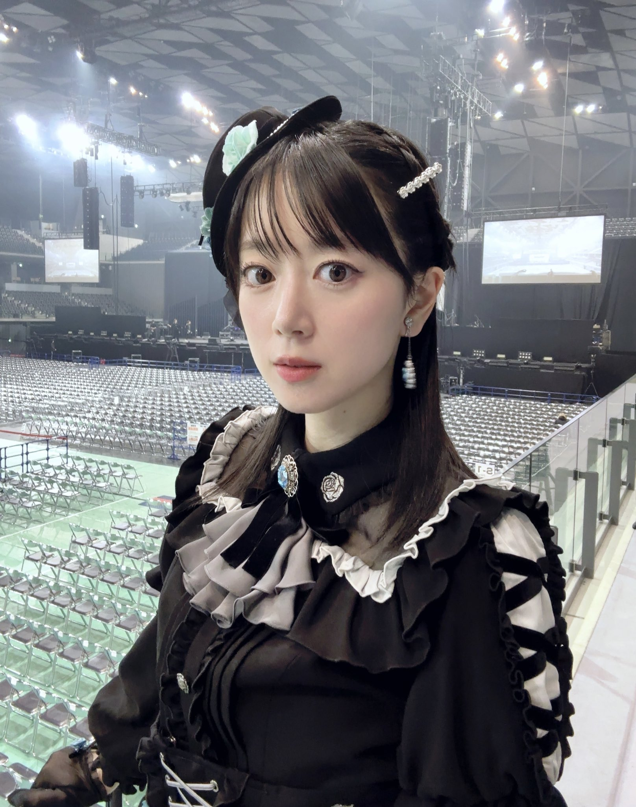

工藤晴香

聲優・歌手・模特
工藤晴香，日本女性聲優、歌手與模特。 曾為雜誌《Seventeen》專屬模特，之後轉向聲優與音樂活動。 在《BanG Dream!》企劃中為冰川紗夜配音，並作為樂團 Roselia 的吉他手活躍。
查看更多
工藤晴香，日本女性聲優、歌手與模特。 曾為雜誌《Seventeen》專屬模特，之後轉向聲優與音樂活動。 在《BanG Dream!》企劃中為冰川紗夜配音，並作為樂團 Roselia 的吉他手活躍。
查看更多